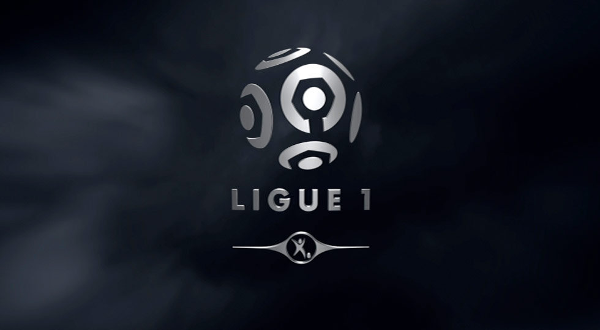

<div class="container">
    <p>
        Ligue 1 (French pronunciation: ​; League 1, formerly known as Division 1), is the French professional league
        for association football clubs. It is the country's primary football competition and serves as the top
        division of the French football league system. Ligue 1 is one of two divisions making up the Ligue de
        Football Professionnel, the other being Ligue 2. Contested by 20 clubs, it operates on a system of promotion
        and relegation with Ligue 2. Seasons run from August to May, with teams playing 38 games each totaling 380
        games in the season. Most games are played on Saturdays and Sundays, with a few games played during weekday
        evenings. Play is regularly suspended the last weekend before Christmas for two weeks before returning in
        the second week of January. Ligue 1 is one of the top national leagues, currently ranked sixth in Europe
        behind the Spanish La Liga, English Premier League, the German Bundesliga, the Portuguese Primeira Liga and
        the Italian Serie A.
    </p>
    <p>
        Ligue 1 was inaugurated on 11 September 1932 under the name National before switching to Division 1 after a
        year of existence. The name lasted until 2002 before switching to its current name. The current champions
        are Paris Saint-Germain, who won the 4th title of their history in the 2013–14 season.
    </p>
    <p>
        Ligue 1 is generally regarded as competently run, with good planning of fixtures, complete and consistently
        enforced rules, timely resolution of issues, and adequate escalation procedures of judicial disputes to
        national or international institutions. The league has faced three significant corruption scandals in its
        history (Antibes in 1933, Red Star in the 1950s, and Marseille in 1993) and has preserved its reputation
        every time through swift and appropriately severe punishment of the guilty parties.
    </p>
</div>
